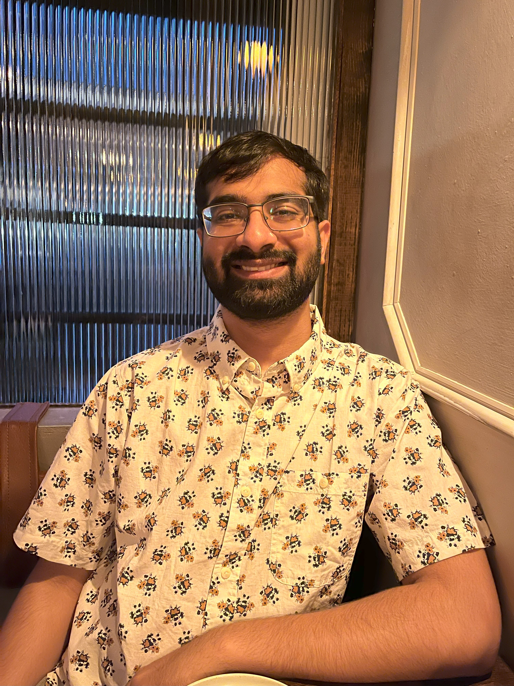

|
Ashwinee Panda I am a 4th year PhD student at Princeton University working with Prateek Mittal on trustworthy artificial intelligence and privacy preserving machine learning. Before Princeton I did my B.S. and M.S. at the UC Berkeley RISE Lab where I was co-advised by Joey Gonzalez and Raluca Ada Popa, researching federated learning. While at Berkeley I founded DiscreetAI, a venture-backed startup building privacy-preserving machine learning as-a-service. You can check out our ProductHunt launch or our GitHub for more information. Among other things we won the first YCombinator Hackathon and built federated learning solutions for Fortune 500 companies. If you are interested in working with me send me an email at [firstname]_at_[university]_dot_[edu]. CV / Google Scholar / Twitter / Github |
 |
{kind=link}
ResearchI'm interested in privacy-preserving machine learning in the form of differentially private federated learning, and the security concerns that manifest as we move training to the edge, in particular data poisoning, backdoor attacks and adversarial examples. The title of my thesis is "Challenges in Augmenting Large Language Models with Private Data". |

|
Introducing Vision into Large Language Models Expands Attack Surfaces and Failure Implications
Xiangyu Qi*, Kaixuan Huang*, Ashwinee Panda, Mengdi Wang, Prateek Mittal At 40th International Conference on Machine Learning AdvML Workshop paper / code We show that visual adversarial examples can serve as transferrable universal jailbreaks against aligned large language models. |
|
Teach GPT to Phish: Neural Phishing Attacks on Large Language Models
Ashwinee Panda, Zhengming Zhang, Yaoqing Yang, Prateek Mittal At 40th International Conference on Machine Learning AdvML Workshop poster We show that inserting poisons into the training dataset of a large language model can induce the model to exactly memorize its training datapoints so they can be perfectly reconstructed at inference time. |
|

|
Differentially Private Generation of High Fidelity Samples From Diffusion Models
Vikash Sehwag*, Ashwinee Panda*, Ashwini Pokle, Xinyu Tang, Saeed Mahloujifar, Mung Chiang, J Zico Kolter, Prateek Mittal At 40th International Conference on Machine Learning GenAI Workshop paper / poster We generate differentially private images from non-privately trained diffusion models by analyzing the inherent privacy of stochastic sampling. |

|
Differentially Private Image Classification by Learning Priors from Random Processes
Xinyu Tang*, Ashwinee Panda*, Vikash Sehwag, Prateek Mittal paper / code We pretrain networks with synthetic images that have strong performance on downstream private computer vision tasks. |
|
A New Linear Scaling Rule for Differentially Private Hyperparameter Optimization
Ashwinee Panda*, Xinyu Tang*, Vikash Sehwag, Saeed Mahloujifar, Prateek Mittal talk / paper / code We propose a new hyperparameter optimization method for differentially private machine learning that massively reduces privacy costs and compute costs. |
|

|
Differentially Private In-Context Learning
Ashwinee Panda*, Tong Wu*, Tianhao Wang*, Prateek Mittal At NAACL 2023 TrustNLP Workshop paper We propose the first method for performing differentially private in-context learning. |

|
Neurotoxin: Durable Backdoors in Federated Learning
Zhengming Zhang*, Ashwinee Panda*, Linyue Song, Yaoqing Yang, Prateek Mittal, Joseph Gonzalez, Kannan Ramchandran, Michael Mahoney In Proceedings of the 39th International Conference on Machine Learning paper / poster / code Neurotoxin is a novel model poisoning attack for federated learning that stays present in the system for up to 5X longer than the baseline attack. |

|
SparseFed: Mitigating Model Poisoning Attacks in Federated Learning via Sparsification
Ashwinee Panda, Saeed Mahloujifar, Arjun Bhagoji, Supriyo Chakraborty, Prateek Mittal In 25th International Conference on Artificial Intelligence and Statistics paper / code SparseFed is a provably robust defense against model poisoning attacks in federated learning that uses server-side sparsification to avoid updating malicious neurons. |

|
FetchSGD: Communication-Efficient Federated Learning with Sketching
Daniel Rothchild*, Ashwinee Panda*, Enayat Ullah, Nikita Ivkin, Ion Stoica, Vladimir Braverman, Joseph Gonzalez, Raman Arora In Proceedings of the 37th International Conference on Machine Learning paper / code FetchSGD is a communication-efficient federated learning algorithm that compresses gradient updates with sketches. |

|
SoftPBT: Leveraging Experience Replay for Efficient Hyperparameter Schedule Search
Ashwinee Panda, Eric Liang, Richard Liaw, Joey Gonzalez Submitted to NeurIPS 2019 paper / code |
Not ResearchWeChat / LinkedIn / Instagram / Yelp / Goodreads / Spotify I was born and raised in San Jose, California. In high school I taught math, played sax, argued vociferously, sang, danced, and wrote slam poetry. Before studying EECS at Cal I spent the summer in China working at a robotics company. I've been back a couple times. |
- I gave a lecture on hashing for CS70, UC Berkeley's undergraduate discrete mathematics and probability course. I have served on course staff for Cal's CS70 and CS189, and Princeton's COS432.
- I worked on R&D at Blockchain at Berkeley. I don't work in crypto anymore, but I'm happy to direct you to any of my amazing friends who have started companies in the space.
- I read voraciously, about 100 books a year, almost entirely fiction. My favorite genres are xianxia, SFF and horror. My favorite book is The Brothers Karamazov by Fyodor Dostoevsky.
- I frequently go on food tours and post reviews on Yelp. Feel free to ask me for restaurant recs in NYC, Edison, San Francisco, Los Angeles, and Baltimore.
|
Website template from Jon Barron. |